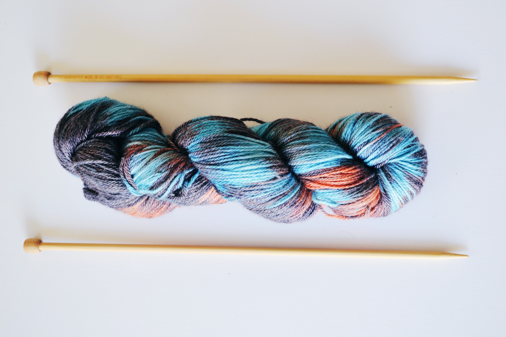

NEW PATTERN
bow tie with chevron stripes

My first colorwork pattern! I saw a knitted bow tie in this adorable little shop and thought, “I NEED to make this!” so I tinkered around with the shape and size, how to create the scrunched look in the middle and how to attach the collar to the bow. Eventually I got the basic pattern down and decided to add some blue and dark grey chevron stripes for a bit more flair. This bow tie fits perfectly with my boyfriend’s wardrobe and he has gotten so many compliments from friends and strangers! It was such a quick knit, I could have made fifteen of them, and I definitely considered it. I’m excited to do more colorworking in the future; it adds so much to a pattern and, once you get the hang of juggling multiple balls of yarn, it’s really quite simple! I can think of so many beautiful color combinations, the possibilities are endless! This pattern is now officially in the shop, along with everything you need to make one (or five) of these yourself!
ADVENTURE
fourth time's the charm?

The first sweater I ever knit was a disaster. So was the second. I tried making a third sweater for some ungodly reason and let’s just say it’s lost to the island of abandoned knits. So when I saw this beautiful sweater pattern a few months before my boyfriend’s birthday, naturally I couldn’t help myself. If it took me three years and five hundred do-overs I was going to make a sweater and it was going to be damn perfect. I found this stunning grey yarn and ordered the NINETEEN balls that the pattern called for. There was no turning back now, what else was I going to do with so much grey yarn! Many things, I know, but still it felt like a commitment. And low and behold, I did it, I finished a sweater and for the first time it fit! It didn’t take three years (though there were quite a few failed attempts to get the gauge right) and look at it- it’s beautiful!
TUTORIAL
dying yarn yourself

I've been wanting to dye my own yarn for a while now, but I never had the courage to risk ruining perfectly good yarn by dying it incorrectly! That is, until a few days ago when my sister found an absolute excess of undyed yarn in the clearance section and brought it over to me. These little son of a guns hide in your brush and you just have to push them out. If you don't like it - change it. It's your world. Let's have a nice tree right here. Steve wants reflections, so let's give him reflections. Talk to trees, look at the birds. Whatever it takes. We don't make mistakes we just have happy little accidents. You've got to learn to fight the temptation to resist these things. Just let them happen. Isn't it great to do something you can't fail at?
Just beat the devil out of it. You need the dark in order to show the light. I started painting as a hobby when I was little. I didn't know I had any talent. I believe talent is just a pursued interest. Anybody can do what I do. Let's build an almighty mountain. Just go back and put one little more happy tree in there.